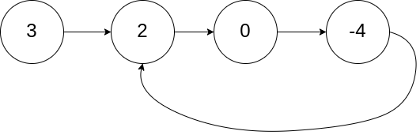
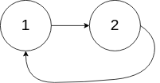

题面
给你一个链表的头节点 head ，判断链表中是否有环。
如果链表中有某个节点，可以通过连续跟踪 next 指针再次到达，则链表中存在环。 为了表示给定链表中的环，评测系统内部使用整数 pos 来表示链表尾连接到链表中的位置（索引从 0 开始）。注意：pos 不作为参数进行传递 。仅仅是为了标识链表的实际情况。
如果链表中存在环 ，则返回 true 。 否则，返回 false 。
示例 1：

输入： head = [3,2,0,-4], pos = 1
输出： true
解释： 链表中有一个环，其尾部连接到第二个节点。示例 2：

输入： head = [1,2], pos = 0
输出： true
解释： 链表中有一个环，其尾部连接到第一个节点。示例 3：
输入： head = [1], pos = -1
输出： false
解释： 链表中没有环。提示：
- 链表中节点的数目范围是
[0, 104] -105 <= Node.val <= 105pos为-1或者链表中的一个 有效索引 。
进阶： 你能用 O(1)（即，常量）内存解决此问题吗？
思路
- 快慢指针（龟兔赛跑）：
- slow 每次走 1 步，fast 每次走 2 步
- 有环：fast 比 slow 快，fast 会在环里不断追 slow，每轮缩小 1 步距离，最终一定相遇
- 无环：fast 会先走到 None（链表末尾），循环正常结束，两者永远不会相遇
- 循环条件
while fast and fast.next：无环时 fast 走到终点退出，返回 False
代码实现
class Solution:
def hasCycle(self, head: Optional[ListNode]) -> bool:
slow, fast = head, head
while fast and fast.next:
slow = slow.next
fast = fast.next.next
if slow == fast:
return True
return False- 复杂度：时间 O(n)，空间 O(1)